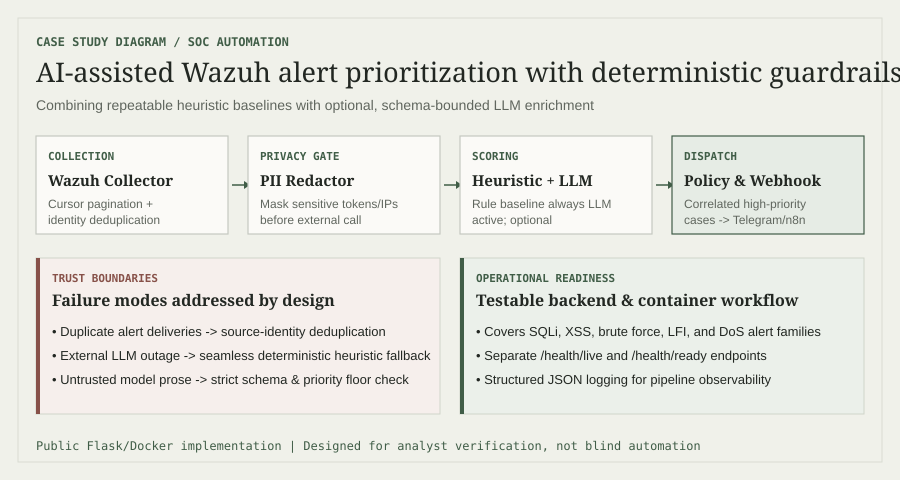

Phân loại theo quy tắc cố định
Rule và ánh xạ severity tạo kết quả lặp lại được, cho phép dịch vụ hoạt động mà không cần mô hình bên ngoài.
Tự động hóa SOC · Backend & DevOps · 08–12/2025
Dịch vụ Python thu thập cảnh báo Wazuh, làm giàu và tương quan sự kiện, kết hợp điểm heuristic với phân tích LLM tùy chọn rồi chuyển các ca ưu tiên cao sang workflow bên ngoài.
01 / Vấn đề
Wazuh có thể tạo ra nhiều cảnh báo trùng nhau hoặc thiếu thông tin để phân tích nhanh. Trong dự án này, mình tìm cách tự động hóa các bước lặp lại, đồng thời giữ cơ chế phân loại bằng rule để hệ thống vẫn xử lý được khi không dùng LLM.
Trang mô tả các khả năng có thể quan sát trong mã nguồn công khai và vai trò được ghi trong CV. Không đưa ra tuyên bố chưa đo lường về giảm thời gian triage hoặc mức sẵn sàng production.
02 / Kiến trúc

Bộ thu thập hỗ trợ phân trang theo cursor và polling thời gian thực. Cảnh báo được chuẩn hóa trước khi phân tích, sau đó khử trùng lặp, làm giàu, tương quan và gắn mức ưu tiên cùng rủi ro false positive. Đầu ra ưu tiên cao có thể đưa vào webhook hoặc workflow n8n.
Rule và ánh xạ severity tạo kết quả lặp lại được, cho phép dịch vụ hoạt động mà không cần mô hình bên ngoài.
Đầu ra mô hình bổ sung, không thay thế baseline. Thiết kế giữ tích hợp ở dạng tùy chọn và cô lập việc xử lý dữ liệu trước lời gọi.
03 / Kiểm soát an toàn
04 / Đóng góp
Phần đóng góp được ghi nhận gồm dịch vụ xử lý sự kiện bảo mật bằng Python, phân loại cảnh báo cho SQL injection, XSS, brute force, LFI và DoS, tương quan sự kiện và thông báo Telegram cho sự cố severity cao. Mình cũng làm việc với quy trình triển khai và interface vận hành.
Mô tả trước đây trong CV ghi FastAPI; repository công khai hiện tại triển khai API bằng Flask. Portfolio sử dụng triển khai công khai có thể kiểm chứng và ghi nhãn tương ứng.
05 / Kiểm chứng
Repository gồm kiểm thử tự động và cấu hình Docker. Dịch vụ cung cấp endpoint health/readiness, tạo log có cấu trúc và có thể chạy không cần LLM hoặc workflow tùy chọn — những thuộc tính hữu ích để cô lập lỗi khi phát triển.
| Ranh giới | Lỗi cần xem xét | Đáp ứng thiết kế |
|---|---|---|
| Thu thập Wazuh | Trang bị lặp hoặc bỏ sót | Theo dõi cursor và khử trùng lặp tất định |
| LLM bên ngoài | Dịch vụ không khả dụng hoặc đầu vào nhạy cảm | Tích hợp tùy chọn, ẩn PII, dự phòng heuristic |
| Chấm điểm cảnh báo | Điểm cao nhưng thiếu ngữ cảnh | Làm giàu, tương quan và nhãn rủi ro |
| Triển khai | Process chạy nhưng chưa sẵn sàng | Tách tín hiệu health/readiness và log JSON |
06 / Bài học
AI hữu ích nhất trong pipeline SOC khi được giới hạn bởi cách xử lý dữ liệu rõ ràng, cơ chế dự phòng quan sát được và ngữ cảnh dễ đọc cho analyst. Dự án củng cố kỹ năng backend, tích hợp SIEM, tự động hóa bảo mật và tư duy phát hiện mối đe dọa, đồng thời nhấn mạnh rằng đánh giá phải đi trước tuyên bố về hiệu quả.
Đánh giá trong tương lai nên so sánh precision, mức đồng thuận của analyst, thời gian triage và chi phí giữa cấu hình chỉ heuristic, chỉ LLM và kết hợp trên tập cảnh báo có nhãn.
Quay về đầu danh sách